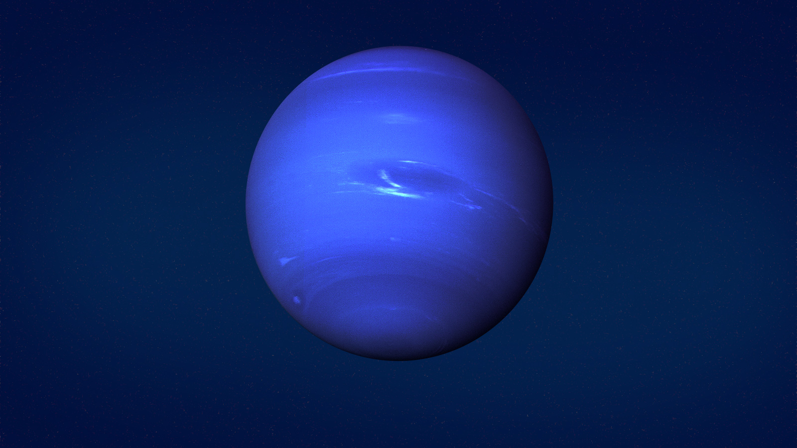

Neptune est la huitième planète par ordre d'éloignement du Soleil et la plus éloignée de l'étoile dans le Système solaire qui soit connue[N 2]. Elle orbite autour du Soleil à une distance d'environ 30,1 au (4,5 milliards de kilomètres), avec une excentricité orbitale de 0,00859 (moitié moindre que celle de la Terre) et une période de révolution de 164,79 ans. C'est la troisième planète la plus massive, la quatrième plus grande par la taille — un peu plus massive mais un peu plus petite qu'Uranus — et la planète géante la plus dense du Système solaire.
N'étant pas visible à l'œil nu, Neptune est le premier objet céleste et la seule des huit planètes du Système solaire à avoir été découverte par déduction plutôt que par observation empirique. En effet, l'astronome français Alexis Bouvard avait noté des perturbations gravitationnelles inexpliquées sur l'orbite d'Uranus et conjecturé au début du XIXe siècle qu'une huitième planète, plus lointaine, pouvait en être la cause. Les astronomes britanniques John Couch Adams en 1843 et français Urbain Le Verrier en 1846 calculèrent indépendamment la position prévue de cette hypothétique planète. Grâce aux calculs de ce dernier, elle fut finalement observée pour la première fois le 23 septembre 1846 par l'astronome prussien Johann Gottfried Galle, à un degré de la position prédite. Bien que Galle ait utilisé les calculs de Le Verrier pour découvrir la planète, la paternité de la découverte entre Adams et Le Verrier fut longtemps disputée. Sa plus grande lune, Triton, est découverte 17 jours plus tard par William Lassell. Depuis 2024, on connaît 16 satellites naturels de Neptune. La planète possède également un système d'anneaux faible et fragmenté et une magnétosphère.
La distance de la planète à la Terre lui donnant une très faible taille apparente, son étude est difficile avec des télescopes situés sur la Terre. Neptune est visitée une seule fois lors de la mission Voyager 2, qui en réalise un survol le 25 août 1989. L'avènement du télescope spatial Hubble et des grands télescopes au sol à optique adaptative a ensuite permis des observations détaillées supplémentaires.
Pour plus d'information, cliquez ici